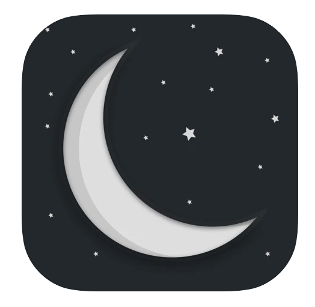

The WiFi
Router & Password Info on the fridge!
The tv, ipad, sound machine, and Alexa are all connected to this network.
Router & Password Info on the fridge!
The tv, ipad, sound machine, and Alexa are all connected to this network.
Power button: turns on the tv and sound bar
Home Button: will bring up a menu of apps
You can find Netflix, Hulu, Disney+, Youtube, and AmazonPrime
Olive is really only into the music on the shows, but doesn't care what show.
Some shows she likes...
Power (on/off): hold top 3 seconds
Change setting: tap top
The sound machine will automatically come on at 12:30p for naptime and 6:30pm for bedtime. It will also turn off automatically in the morning at 8am and at 3:30p after naptime. The toddler setting is on for naptime, so Olive can't change it, which means you cant control it from the device only from the app.

White noise app
The air conditioner setting, sounds like static.
This app will run for 8 hours straight
Endless spanish.
Olive will keep busy with the app but needs some help getting the letters.